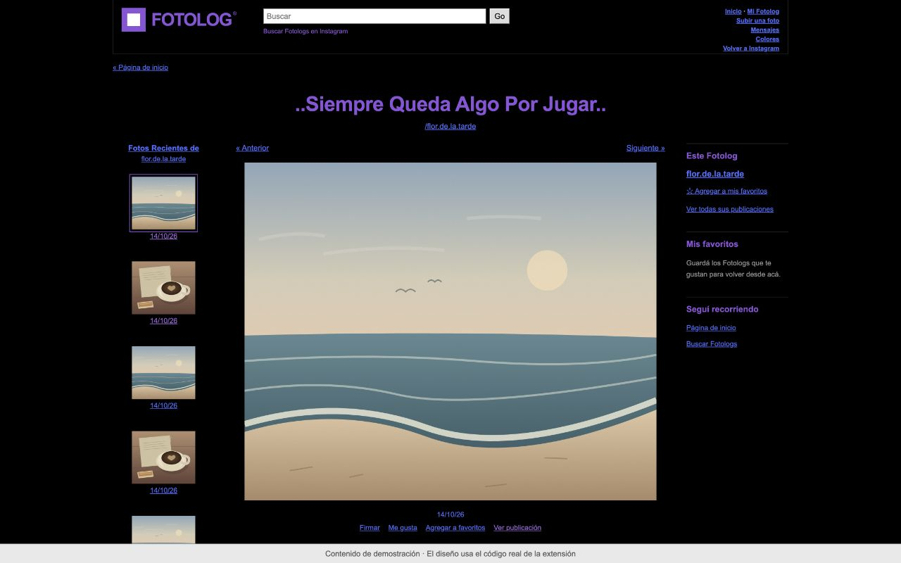

Fotolog para Instagram
..Siempre Queda Algo Por Jugar..


Captura del skin con contenido de demostración.
Fotos y reels en el diario de tres columnas. Un inicio para recorrer el feed, paletas por usuario, favoritos y perfiles recientes.
Descargar Fotolog (.zip)